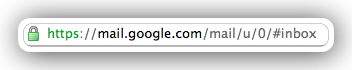
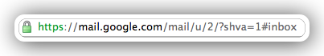
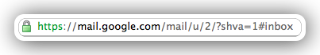

System Preferences

System Preferences

System Preferences

System Preferences

Alfred

Better Touch Tool

issh & privoxy

Proxy SwitchySharp & foxyproxy


tunnelblick & chnroutes


gmask & smarthosts

iTerm2

Customized terminal
 http://dev-spout.blogspot.com/2011/07/mac-terminal-colors-git-prompt.html
http://dev-spout.blogspot.com/2011/07/mac-terminal-colors-git-prompt.html
 http://lifehacker.com/5840450/add-a-handy-separator-between-commands-in-your-terminal-on-mac-os-x-and-linux
http://lifehacker.com/5840450/add-a-handy-separator-between-commands-in-your-terminal-on-mac-os-x-and-linux
Homebrew

Git
hist histfull

Git
gitx smartgit
smartgit
Browser


Chrome


Reeder for Chrome

CCTOME

Notify
 

Have a break: Time out